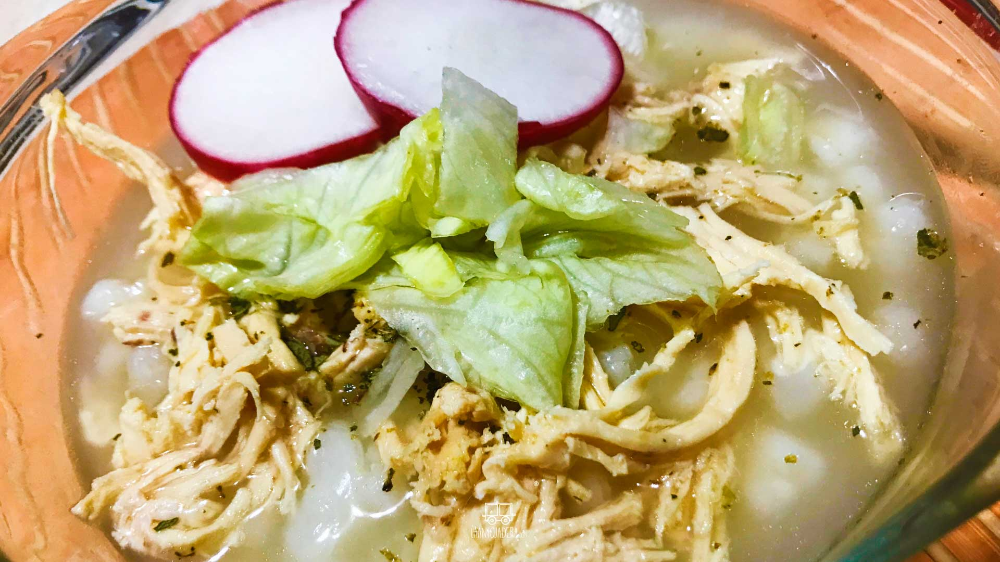
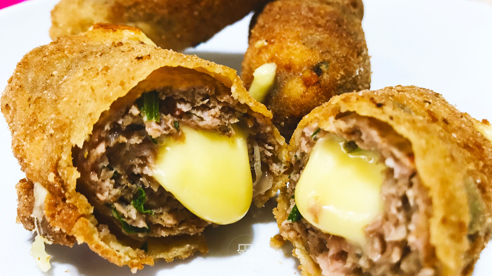

El sabor de la vida
Comer para creer
Pozole Blanco de pollo
Lunes, 5 de Agosto de 2019

Preparación
- Colocamos una olla honda en el fuego.
- Añadimos el agua.
- Añadimos el maíz pozolero.
- Añadimos el ajo.
- Añadimos la cebolla.
- Añadimos el consomé de pollo en polvo.
- Tapamos la olla.
- Dejamos en el fuego por un lapso de 1 hora y 15 minutos.
- Añadimos la pechuga de pollo.
- Añadimos el ramo de hierbas de olor.
- Añadimos sal al gusto.
- Tapamos la olla.
- Dejamos en el fuego por 50 minutos.
- Retiramos la pechuga de pollo.
- Desmenuzamos la pechuga.
- Regresamos el pollo al pozole opcional.
- Servimos, acompañamos con lechuga, rábanos, limón al gusto.
Escribe un comentario:

Maria23: Gracias por la receta 👍

Juan_F: Tengo una pregunta, a que temperatura se debe dejar en cocción?
Chef_788: La preparación es muy simple y no requiere ser un experto, gracias 👍
Dedos De Queso Manchego Con Carne Molida
Jueves, 15 de Agosto de 2019

Preparación
- Colocamos un recipiente amplio.
- Añadimos la carne molida.
- Añadimos la cebolla.
- Añadimos el ajo.
- Añadimos perejil al gusto.
- Añadimos albahaca al gusto.
- Añadimos orégano al gusto.
- Añadimos pimienta al gusto.
- Añadimos sal al gusto.
- Añadimos el jugo sazonador.
- Integramos perfectamente.
- Añadimos el pan molido.
- Integramos perfectamente.
- Tomamos un baston de queso manchego.
- Envolvemos en carne molida.
- Colocamos un recipiente hondo.
- Añadimos los huevos.
- Batimos perfectamente.
- Tomamos un dedo de queso.
- Pasamos por la harina.
- Pasamos por el huevo.
- Pasamos por el pan molido y reservamos.
- Colocamos una olla honda en el fuego.
- Añadimos el aceite y dejamos calentar.
- Añadimos los dedos de queso manchego.
- Dejamos freír por 25 minutos o al termino que deseemos.
- Retiramos del fuego y colocamos sobre papel absorbente.
Escribe un comentario: